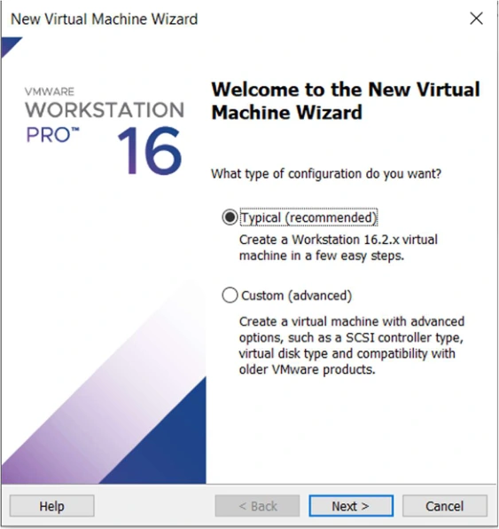
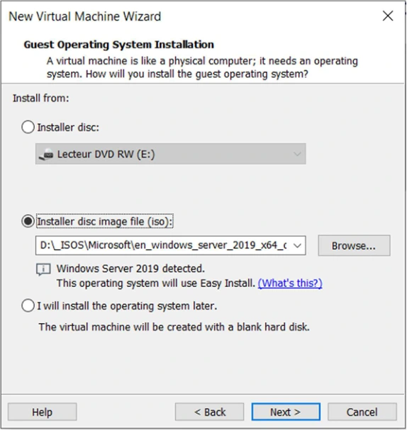
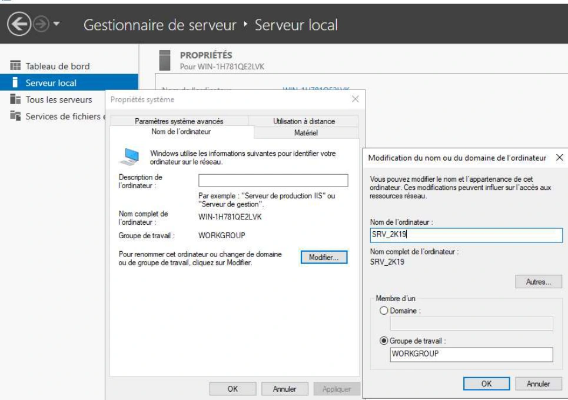

TSSR110-Virtualisation_Mise en Situation - Module 2 - Workstation - Solution
La transcription conserve les repères des pages du support. Les marques du centre et les valeurs de connexion propres au laboratoire sont neutralisées. Les visuels retenus sont isolés.
Solution
Atelier N°1
Solution du TP du Module 02 – Installation VMWare Workstation
Durée estimée
1 heures
Objectif :
Déployer une machine virtuelle Windows Server 2019
Prérequis :
Votre Machine physique est déployée sous Windows Server 2019
L’adressage IP s’effectuera par l’intermédiaire du service DHCP
Énoncé :
Contrôler la présence de la solution de virtualisation VMware Workstation 16.
Créer un nouveau dossier sur le volume « D » que vous nommerez « Machines virtuelles ». Ce dossier servira de point de stockage pour toutes vos machines virtuelles créées dans Workstation.
Créer une VM nommée « SRV_2K19 » de type Windows Server 2019 avec pour prérequis :
2 CPU / 1 cœur
2 Go RAM
1 carte réseau bridgée
60 Go de disque en “single file”
et activer "Virtualize Intel VT-x/EPT or AMD-V/RVI" au niveau des processeurs
Récupérer le fichier ISO de Windows Server 2019 sur le partage"iso\os\windows\” du serveur “distrib” et l’utiliser comme image du CDROM de la machine virtuelle.

Capture isolée du support, page 2
Informations dans les visuels du support
Dans l’assistant VMware Workstation, sélectionner le fichier ISO Windows Server 2019 fourni.
Easy Install détecte Windows Server 2019. La capture choisit l’édition Windows Server 2019 Standard et le compte de laboratoire admin. Les champs de mot de passe utilisent la valeur fournie par le formateur et l’ouverture de session automatique est décochée.

Capture isolée du support, page 3
Informations dans les visuels du support
Nommer la machine SRV_2K19. La capture propose D:\Machines virtuelles\SRV_2K19 comme emplacement.
Fixer la capacité maximale à 60 Go, conserver l’allocation à la demande et choisir Store virtual disk as a single file.
Cliquer sur
Pour activer les fonctions avancées de virtualisation, cocher la case comme suit :
Modifier le paramètre de la carte réseau en « bridge » :
Procéder à l’installation de Windows Server 2019 avec « expérience utilisateur » dans la machine virtuelle.
Y installer les « VMware Tools ».
Nommer la machine virtuelle puis l’arrêter.

Capture isolée du support, page 7
Faites IMPERATIVEMENT une capture instantanée “snapshot “ de la machine virtuelle que vous nommerez « Fin Atelier 1 »